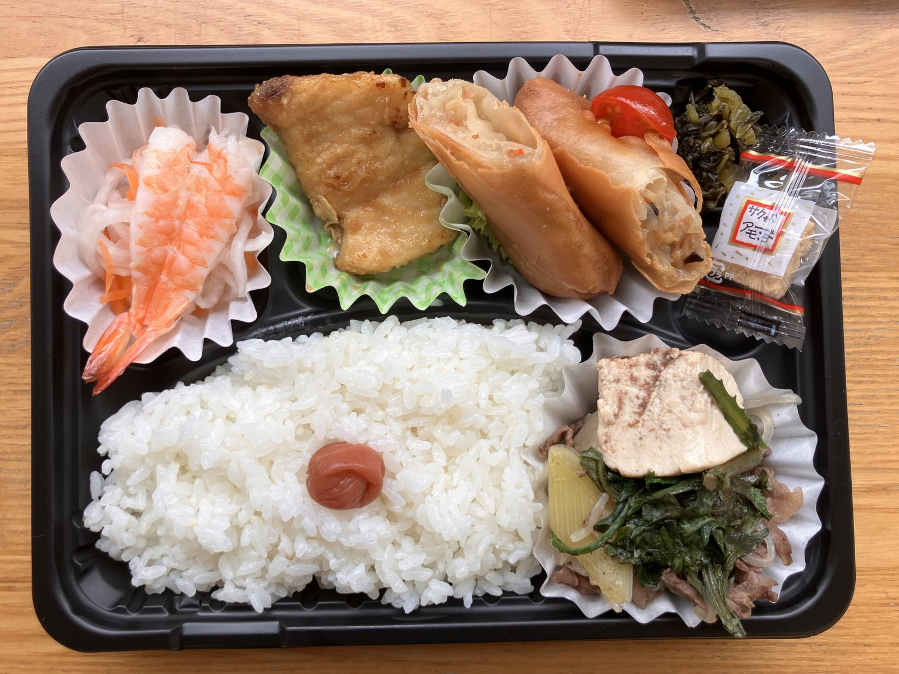
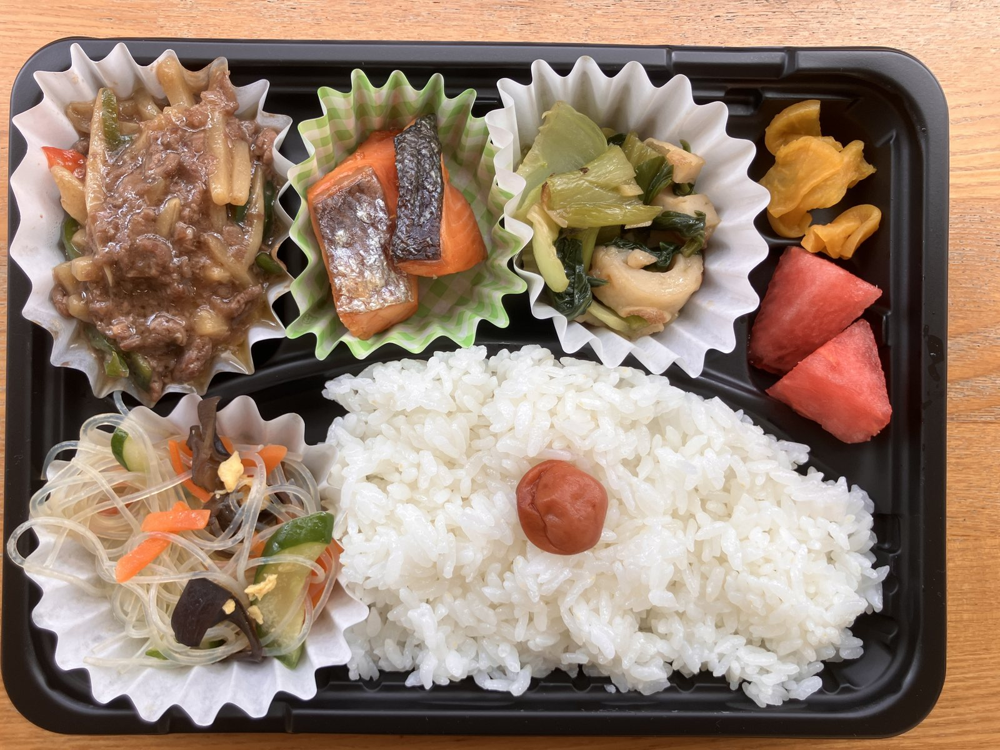
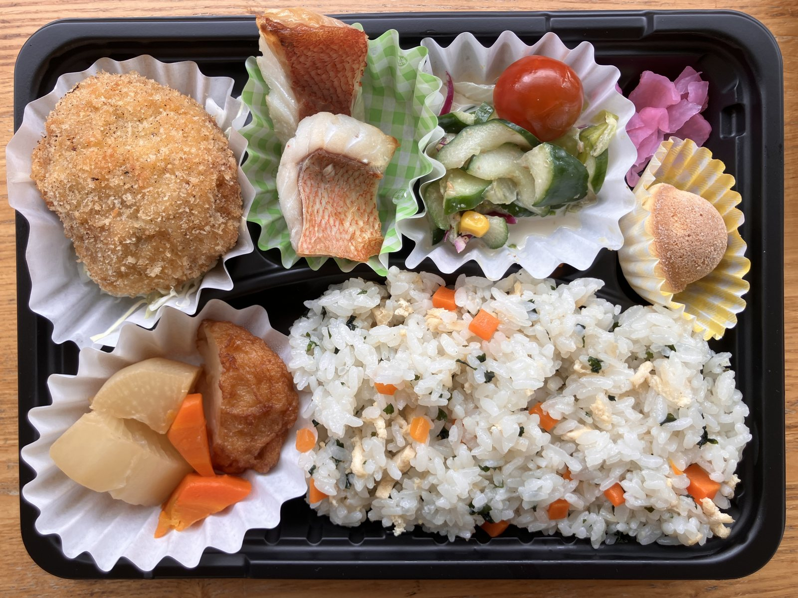
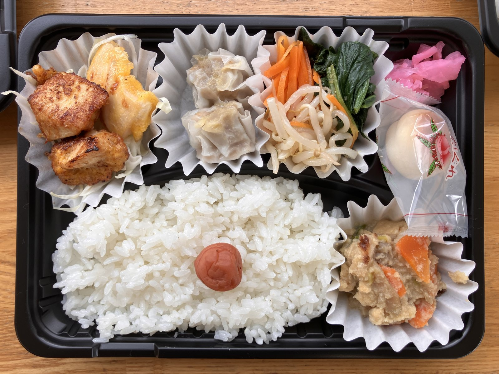
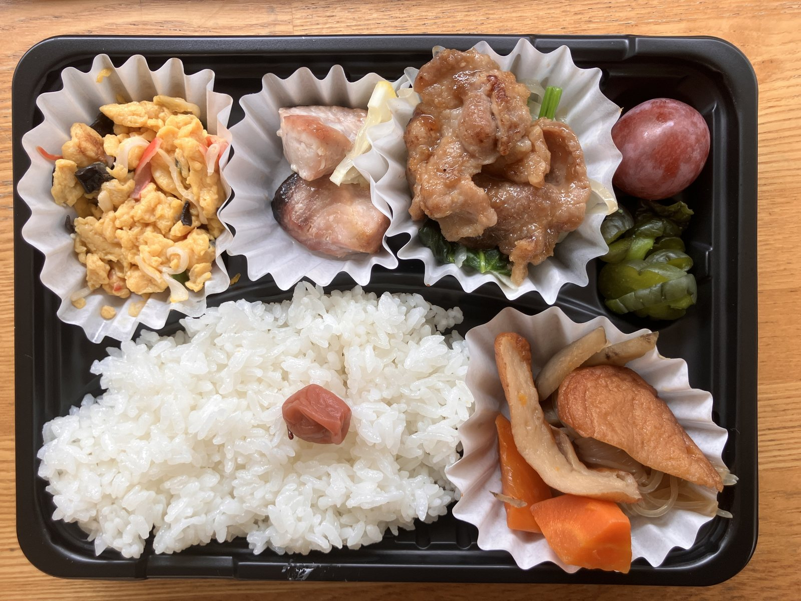
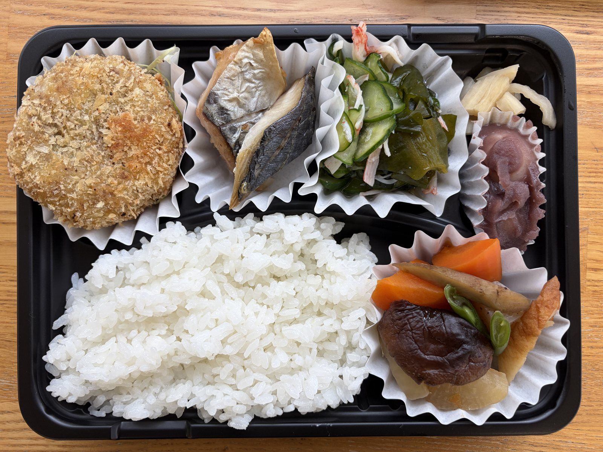
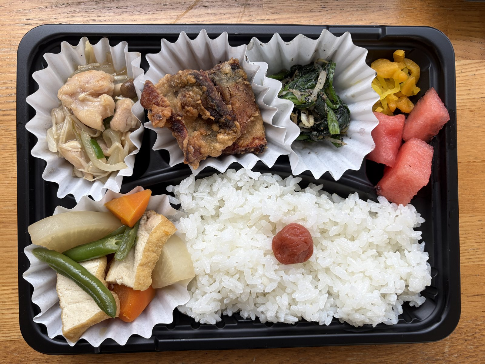
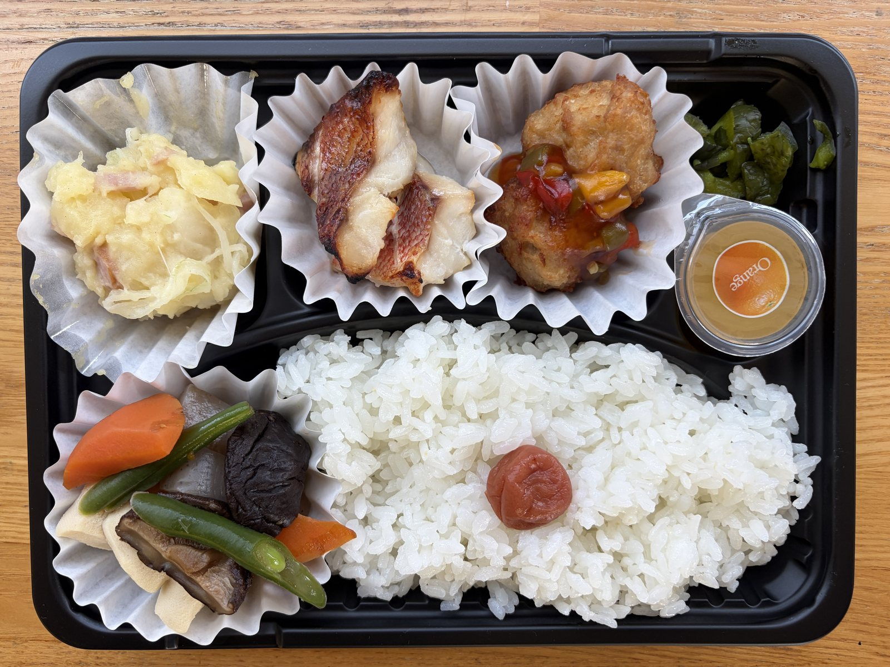
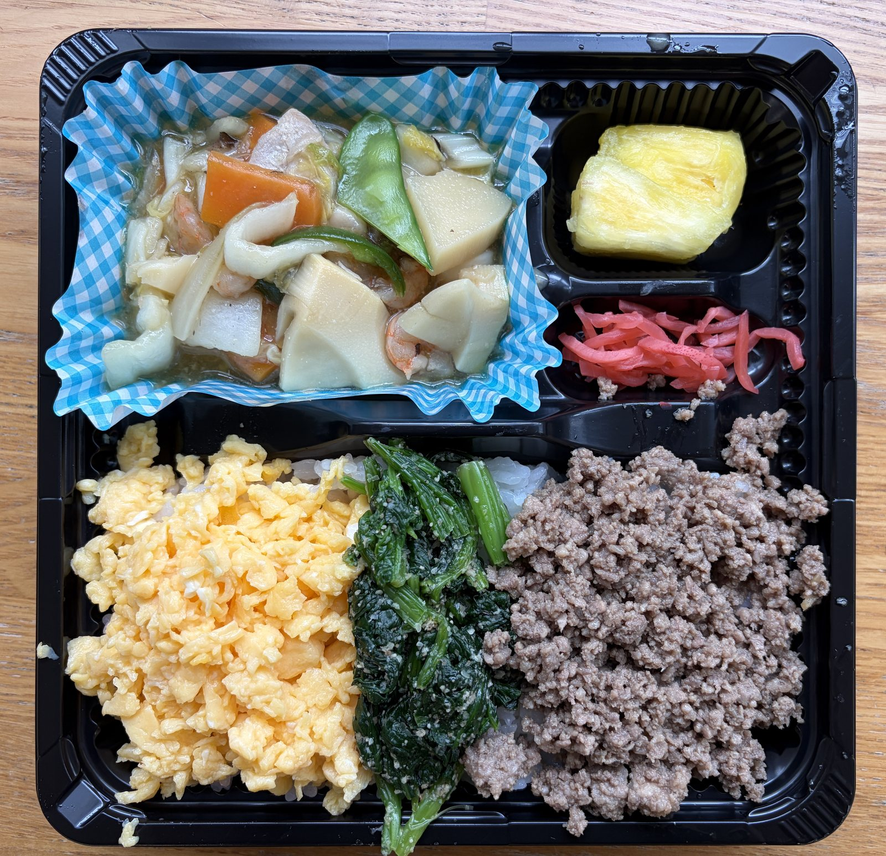
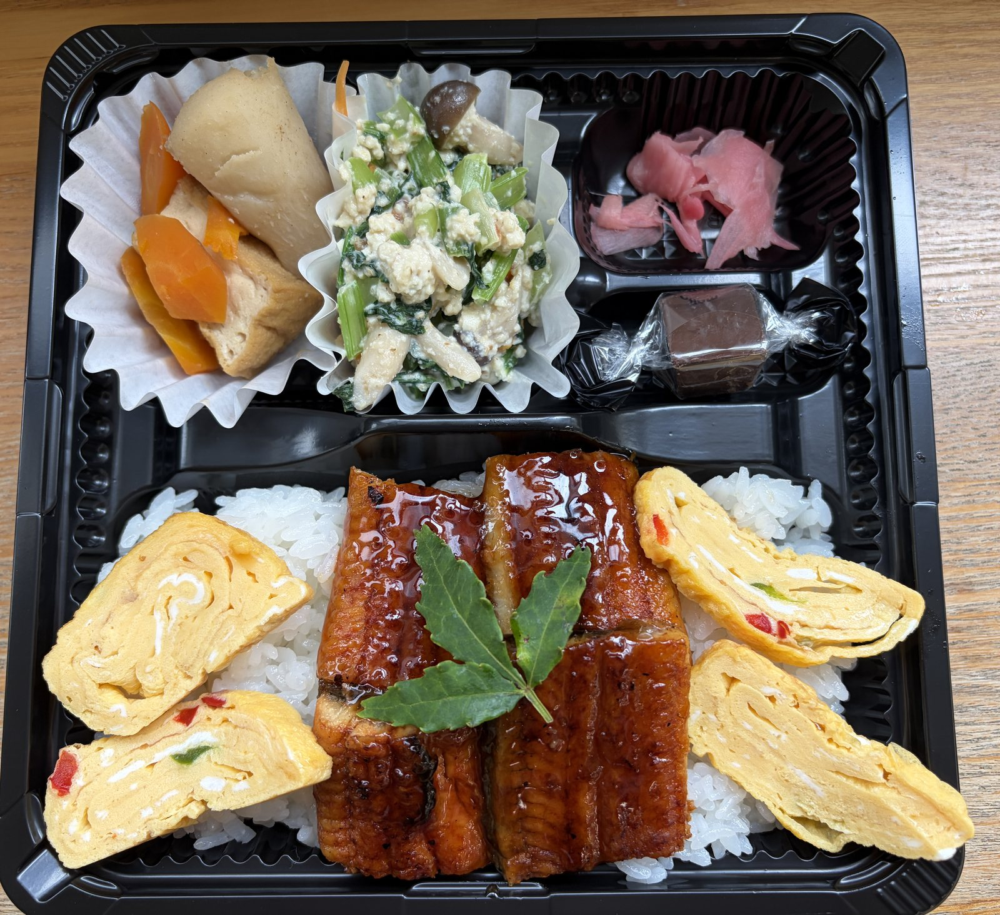

2026-08-04｜地域活動
6・7月の給食ボランティアと、傾聴を学ぶ取り組み
お弁当を届けること、そしてお話をじっくり聞くこと。給食ボランティアを通じて感じたことをまとめました。
2026-08-04｜地域活動
お弁当を届けること、そしてお話をじっくり聞くこと。給食ボランティアを通じて感じたことをまとめました。
6・7月の給食ボランティアで作ったお弁当です。主菜や副菜、季節の食材を組み合わせ、毎回のお食事を楽しんでいただけるように準備しています。










作ったお弁当をお渡しするとき、「こんにちは、お弁当です」とお伝えするだけではなく、少しでもお話ができればと思うようになりました。
そこで、三鷹市傾聴ボランティア員の認定を受けました。人の話をじっくり聞くことを改めて勉強してみると、簡単なようでいて、結構難しいものだと感じます。
仕事でもヒアリングの機会が多いため、相手の話を急いでまとめたり、こちらの考えを先に伝えたりせず、まずはその人の言葉を受け止める練習は、仕事にとっても良い経験になっています。
三鷹市では、主に65歳以上の高齢者単独世帯の希望者を対象に、週2回の給食サービスと安否確認を目的とした活動が行われています。
お弁当を届けることは、食事をお渡しするだけではありません。顔を合わせ、声をかけ、いつもと変わりがないかを感じ取る。その短い時間も、地域で暮らす方にとって大切な安心の一部なのだと思います。
お弁当の準備とお届け、そしてその場での会話。どちらも一人ひとりの暮らしに寄り添うための大切な時間です。
これからも、できることを一つずつ続けながら、食事と安否確認の活動に参加していきたいと思います。
高齢のご家族の見守りや、住まい・空き家の確認についてもご相談ください。
相談窓口へ戻る